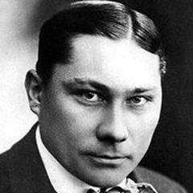
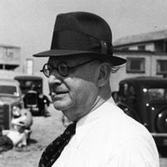
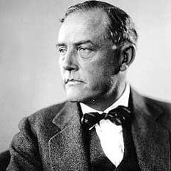
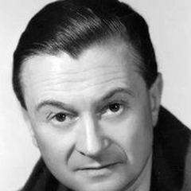
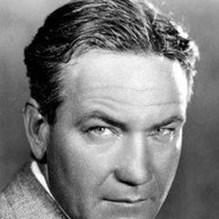

173 films
Horror
Horror turns fear into form. German Expressionism gave it shadows and distorted sets (Nosferatu, Caligari); Universal's 1930s monsters made it popular; Hammer in Britain and Bava and Argento in Italy gave it colour and style; the 1970s brought grim realism with Romero, Hooper and Carpenter. Today it ranges from folk horror to elevated, psychological work. The genre has long reflected anxieties about war, class, bodies and technology.
- Where
- Germany, the United States, Britain, Italy, Japan, South Korea
- When
- From the 1890s; major waves in the 1920s, 1930s, 1960s–70s and 2010s
- Key figures
- F.W. Murnau, James Whale, Mario Bava, George A. Romero, John Carpenter, Hideo Nakata
- Landmark films
- Nosferatu (1922), Psycho (1960), The Exorcist (1973), Ringu (1998)
- Legacy
- Gave cinema a language for dread, the uncanny and the unseen
What to look for
- Sound and what is kept out of frame
- Monsters as metaphors
- Isolated houses, towns and ships
- Slow dread followed by shock
- Rules that the story then breaks
Directors with the most films in this genre
Dario Argento11 filmsGeorge A. Romero10 filmsMario Bava10 filmsDavid Cronenberg8 filmsWes Craven8 filmsTobe Hooper7 filmsTod Browning6 filmsGuillermo del Toro4 filmsJohn Carpenter4 filmsLars von Trier4 filmsPaul Leni4 filmsAlfred Hitchcock3 filmsF.W. Murnau3 filmsJames Whale3 filmsJordan Peele3 films

Paul Wegener3 films
Robert Wiene3 filmsRoman Polanski3 filmsAbel Ferrara2 filmsAndrzej Żuławski2 filmsBrian De Palma2 filmsClaire Denis2 filmsDavid Lynch2 filmsJulia Ducournau2 filmsSee all 84 directors
Kaneto Shindo2 filmsMichael Haneke2 filmsNeil Jordan2 filmsTakashi Miike2 films Todd Haynes1 film
Todd Haynes1 film

Victor Sjöström2 filmsYorgos Lanthimos2 filmsAbel Gance1 filmAlejandro Jodorowsky1 filmAli Abbasi1 filmBenjamin Christensen1 filmBong Joon-ho1 filmBrillante Mendoza1 filmCarl Theodor Dreyer1 filmDanny Boyle1 filmDarren Aronofsky1 filmDon Siegel1 filmFrancis Ford Coppola1 filmFritz Lang1 filmGeorges Méliès1 filmGoran Marković1 filmGuy Maddin1 filmHarmony Korine1 filmHenri-Georges Clouzot1 filmIngmar Bergman1 filmJean Delannoy1 filmJean-Luc Godard1 filmJean-Pierre Jeunet1 filmJerzy Skolimowski1 film
Julien Duvivier1 filmKathryn Bigelow1 filmKatsuhiro Otomo1 filmKunle Afolayan1 filmKutluğ Ataman1 filmLuis Buñuel1 filmMasaki Kobayashi1 filmMatteo Garrone1 filmMichael Curtiz1 filmMichel Hazanavicius1 filmMilčo Mančevski1 filmNagisa Oshima1 filmNicolas Roeg1 filmPark Chan-wook1 filmPeter Jackson1 filmRené Clair1 filmRidley Scott1 filmRobert Altman1 filmRobert Siodmak1 filmSamuel Fuller1 filmSeijun Suzuki1 filmStanley Kubrick1 filmSteven Soderbergh1 filmSteven Spielberg1 filmTeinosuke Kinugasa1 filmTodd Haynes1 film
Victor Fleming1 filmVishal Bhardwaj1 filmWalter Salles1 filmWerner Herzog1 filmWilliam Friedkin1 filmWojciech Has1 filmOften combined with
173 films, best rated first
- Psycho 1960 · Alfred Hitchcock · IMDb 8.5
- Alien 1979 · Ridley Scott · IMDb 8.4
- The Shining 1980 · Stanley Kubrick · IMDb 8.4
- The Thing 1982 · John Carpenter · IMDb 8.2
- Faust 1926 · F.W. Murnau · IMDb 8.1
- Jaws 1975 · Steven Spielberg · IMDb 8.1
- Les Diaboliques 1955 · Henri-Georges Clouzot · IMDb 8.1
- The Exorcist 1973 · William Friedkin · IMDb 8.1
- Variola Vera 1982 · Goran Marković · IMDb 8.1
- Rosemary's Baby 1968 · Roman Polanski · IMDb 8.0
- The Cabinet of Dr. Caligari 1920 · Robert Wiene · IMDb 8.0
- The Phantom Carriage 1921 · Victor Sjöström · IMDb 8.0
- Kwaidan 1964 · Masaki Kobayashi · IMDb 7.9
- Bride of Frankenstein 1935 · James Whale · IMDb 7.8
- Dawn of the Dead 1978 · George A. Romero · IMDb 7.8
- Freaks 1932 · Tod Browning · IMDb 7.8
- Get Out 2017 · Jordan Peele · IMDb 7.8
- Night of the Living Dead 1968 · George A. Romero · IMDb 7.8
- Nosferatu 1922 · F.W. Murnau · IMDb 7.8
- Onibaba 1964 · Kaneto Shindo · IMDb 7.8
- Frankenstein 1931 · James Whale · IMDb 7.7
- Halloween 1978 · John Carpenter · IMDb 7.7
- He Who Gets Slapped 1924 · Victor Sjöström · IMDb 7.7
- Invasion of the Body Snatchers 1956 · Don Siegel · IMDb 7.7
- J'accuse 1919 · Abel Gance · IMDb 7.7
- The Unknown 1927 · Tod Browning · IMDb 7.7
- Destiny 1921 · Fritz Lang · IMDb 7.6
- Häxan 1922 · Benjamin Christensen · IMDb 7.6
- The Birds 1963 · Alfred Hitchcock · IMDb 7.6
- The Fly 1986 · David Cronenberg · IMDb 7.6
- The Invisible Man 1933 · James Whale · IMDb 7.6
- The Man Who Laughs 1928 · Paul Leni · IMDb 7.6
- Un chien andalou 1929 · Luis Buñuel · IMDb 7.6
- 28 Days Later 2002 · Danny Boyle · IMDb 7.5
- Deep Red 1975 · Dario Argento · IMDb 7.5
- Funny Games 1997 · Michael Haneke · IMDb 7.5
- Hour of the Wolf 1968 · Ingmar Bergman · IMDb 7.5
- Repulsion 1965 · Roman Polanski · IMDb 7.5
- Scream 1996 · Wes Craven · IMDb 7.5
- A Nightmare on Elm Street 1984 · Wes Craven · IMDb 7.4
- Bram Stoker's Dracula 1992 · Francis Ford Coppola · IMDb 7.4
- Carrie 1976 · Brian De Palma · IMDb 7.4
- Santa Sangre 1989 · Alejandro Jodorowsky · IMDb 7.4
- The Hourglass Sanatorium 1973 · Wojciech Has · IMDb 7.4
- The Texas Chain Saw Massacre 1974 · Tobe Hooper · IMDb 7.4
- Vampyr 1932 · Carl Theodor Dreyer · IMDb 7.4
- A Page of Madness 1926 · Teinosuke Kinugasa · IMDb 7.3
- Dracula 1931 · Tod Browning · IMDb 7.3
- Nosferatu the Vampyre 1979 · Werner Herzog · IMDb 7.3
- Pi 1998 · Darren Aronofsky · IMDb 7.3
- Poltergeist 1982 · Tobe Hooper · IMDb 7.3
- Suspiria 1977 · Dario Argento · IMDb 7.3
- The Devil's Backbone 2001 · Guillermo del Toro · IMDb 7.3
- The Spiral Staircase 1946 · Robert Siodmak · IMDb 7.3
- The Third Part of the Night 1971 · Andrzej Żuławski · IMDb 7.3
- Twin Peaks: Fire Walk with Me 1992 · David Lynch · IMDb 7.3
- Dead Ringers 1988 · David Cronenberg · IMDb 7.2
- Eraserhead 1977 · David Lynch · IMDb 7.2
- Possession 1981 · Andrzej Żuławski · IMDb 7.2
- The Golem: How He Came into the World 1920 · Paul Wegener · IMDb 7.2
- They Live 1988 · John Carpenter · IMDb 7.2
- West of Zanzibar 1928 · Tod Browning · IMDb 7.2
- Audition 1999 · Takashi Miike · IMDb 7.1
- Black Sunday 1960 · Mario Bava · IMDb 7.1
- Blood and Black Lace 1964 · Mario Bava · IMDb 7.1
- Day of the Dead 1985 · George A. Romero · IMDb 7.1
- Don't Look Now 1973 · Nicolas Roeg · IMDb 7.1
- The Bird with the Crystal Plumage 1970 · Dario Argento · IMDb 7.1
- The Cat and the Canary 1927 · Paul Leni · IMDb 7.1
- The Host 2006 · Bong Joon-ho · IMDb 7.1
- Thirst (2009) 2009 · Park Chan-wook · IMDb 7.1
- Videodrome 1983 · David Cronenberg · IMDb 7.1
- Black Sabbath 1963 · Mario Bava · IMDb 7.0
- Careful 1992 · Guy Maddin · IMDb 7.0
- Empire of Passion 1978 · Nagisa Oshima · IMDb 7.0
- Images 1972 · Robert Altman · IMDb 7.0
- Tenebrae 1982 · Dario Argento · IMDb 7.0
- The Devil-Doll 1936 · Tod Browning · IMDb 7.0
- The Fearless Vampire Killers 1967 · Roman Polanski · IMDb 7.0
- The Hands of Orlac 1924 · Robert Wiene · IMDb 7.0
- The Killing of a Sacred Deer 2017 · Yorgos Lanthimos · IMDb 7.0
- White Dog 1982 · Samuel Fuller · IMDb 7.0
- Flesh and Fantasy 1943 · Julien Duvivier · IMDb 6.9
- Gozu 2003 · Takashi Miike · IMDb 6.9
- Martin 1977 · George A. Romero · IMDb 6.9
- Near Dark 1987 · Kathryn Bigelow · IMDb 6.9
- Opera 1987 · Dario Argento · IMDb 6.9
- Raw 2016 · Julia Ducournau · IMDb 6.9
- Zigeunerweisen 1980 · Seijun Suzuki · IMDb 6.9
- Creepshow 1982 · George A. Romero · IMDb 6.8
- Dr. Jekyll and Mr. Hyde 1941 · Victor Fleming · IMDb 6.8
- Kill, Baby, Kill 1966 · Mario Bava · IMDb 6.8
- Nope 2022 · Jordan Peele · IMDb 6.8
- Sisters 1973 · Brian De Palma · IMDb 6.8
- The Brood 1979 · David Cronenberg · IMDb 6.8
- The Fog 1980 · John Carpenter · IMDb 6.8
- The House That Jack Built 2018 · Lars von Trier · IMDb 6.8
- The Last Warning 1929 · Paul Leni · IMDb 6.8
- Us 2019 · Jordan Peele · IMDb 6.8
- Cronos 1993 · Guillermo del Toro · IMDb 6.7
- Phenomena 1985 · Dario Argento · IMDb 6.7 · Crime, Horror, Mystery
- Scanners 1981 · David Cronenberg · IMDb 6.7 · Horror, Sci-Fi, Thriller
- Shadows (2007) 2007 · Milčo Mančevski · IMDb 6.7 · Drama, Horror, Mystery
- The Ghost Goes West 1935 · René Clair · IMDb 6.7 · Comedy, Fantasy, Horror
- The Golem 1915 · Paul Wegener · IMDb 6.7 · Horror
- Notre-Dame de Paris 1956 · Jean Delannoy · IMDb 6.6 · Drama, Fantasy, Horror
- The Cat o' Nine Tails 1971 · Dario Argento · IMDb 6.6 · Horror, Mystery, Thriller
- The Company of Wolves 1984 · Neil Jordan · IMDb 6.6 · Drama, Fantasy, Horror
- Antichrist 2009 · Lars von Trier · IMDb 6.5 · Drama, Horror, Thriller
- Crimson Peak 2015 · Guillermo del Toro · IMDb 6.5 · Drama, Horror, Mystery
- Inferno 1980 · Dario Argento · IMDb 6.5 · Horror
- Kinatay 2009 · Brillante Mendoza · IMDb 6.5 · Crime, Drama, Horror
- The Addiction 1995 · Abel Ferrara · IMDb 6.5 · Drama, Horror
- The Shout 1978 · Jerzy Skolimowski · IMDb 6.5 · Drama, Horror, Thriller
- Waxworks 1924 · Paul Leni · IMDb 6.5 · Fantasy, Horror
- Bad Taste 1987 · Peter Jackson · IMDb 6.4 · Comedy, Horror, Sci-Fi
- Bay of Blood 1971 · Mario Bava · IMDb 6.4 · Horror, Mystery, Thriller
- Doctor X 1932 · Michael Curtiz · IMDb 6.4 · Comedy, Crime, Horror
- Kinds of Kindness 2024 · Yorgos Lanthimos · IMDb 6.4 · Comedy, Drama, Horror
- Tale of Tales 2015 · Matteo Garrone · IMDb 6.4 · Drama, Fantasy, Horror
- The People Under the Stairs 1991 · Wes Craven · IMDb 6.4 · Comedy, Horror, Mystery
- The Serpent and the Rainbow 1988 · Wes Craven · IMDb 6.4 · Fantasy, Horror
- The Student of Prague 1913 · Paul Wegener · IMDb 6.4 · Drama, Fantasy, Horror
- Titane 2021 · Julia Ducournau · IMDb 6.4 · Drama, Horror, Sci-Fi
- Unsane 2018 · Steven Soderbergh · IMDb 6.4 · Drama, Horror, Mystery
- Wes Craven's New Nightmare 1994 · Wes Craven · IMDb 6.4 · Fantasy, Horror, Mystery
- Final Cut 2022 · Michel Hazanavicius · IMDb 6.3 · Comedy, Horror
- Mark of the Vampire 1935 · Tod Browning · IMDb 6.3 · Horror, Mystery
- Poison 1991 · Todd Haynes · IMDb 6.3 · Drama, Horror, Romance
- Rabid 1977 · David Cronenberg · IMDb 6.3 · Horror, Sci-Fi
- Shivers 1975 · David Cronenberg · IMDb 6.3 · Horror, Sci-Fi
- The Hills Have Eyes 1977 · Wes Craven · IMDb 6.3 · Horror, Thriller
- Alien: Resurrection 1997 · Jean-Pierre Jeunet · IMDb 6.2 · Action, Horror, Sci-Fi
- Land of the Dead 2005 · George A. Romero · IMDb 6.2 · Horror, Sci-Fi, Thriller
- Lifeforce 1985 · Tobe Hooper · IMDb 6.2 · Action, Horror, Mystery
- Lisa and the Devil 1973 · Mario Bava · IMDb 6.2 · Horror, Mystery
- Monkey Shines 1988 · George A. Romero · IMDb 6.2 · Drama, Horror, Sci-Fi
- Planet of the Vampires 1965 · Mario Bava · IMDb 6.2 · Action, Adventure, Horror
- Shock 1977 · Mario Bava · IMDb 6.2 · Horror
- The Image Book 2018 · Jean-Luc Godard · IMDb 6.2 · Documentary, Drama, Horror
- Hercules in the Haunted World 1961 · Mario Bava · IMDb 6.1 · Adventure, Fantasy, Horror
- The Crazies 1973 · George A. Romero · IMDb 6.1 · Action, Horror, Sci-Fi
- The Haunted Castle (1921) 1921 · F.W. Murnau · IMDb 6.1 · Crime, Drama, Horror
- Mimic 1997 · Guillermo del Toro · IMDb 6.0 · Horror, Sci-Fi
- The Stendhal Syndrome 1996 · Dario Argento · IMDb 6.0 · Horror, Mystery, Thriller
- Epidemic 1987 · Lars von Trier · IMDb 5.9 · Drama, Horror
- Genuine 1920 · Robert Wiene · IMDb 5.9 · Fantasy, Horror, Romance
- The Funhouse 1981 · Tobe Hooper · IMDb 5.9 · Horror
- Trouble Every Day 2001 · Claire Denis · IMDb 5.9 · Drama, Horror, Thriller
- World Apartment Horror 1991 · Katsuhiro Otomo · IMDb 5.9 · Comedy, Horror
- Crimes of the Future 2022 · David Cronenberg · IMDb 5.8 · Drama, Horror, Sci-Fi
- The Last House on the Left 1972 · Wes Craven · IMDb 5.8 · Horror, Thriller
- Trauma 1993 · Dario Argento · IMDb 5.8 · Horror, Mystery, Thriller
- High Life 2018 · Claire Denis · IMDb 5.7 · Drama, Horror, Sci-Fi
- The Haunted Castle 1896 · Georges Méliès · IMDb 5.7 · Horror
- Dark Water 2005 · Walter Salles · IMDb 5.6 · Drama, Horror, Mystery
- Season of the Witch 1973 · George A. Romero · IMDb 5.6 · Drama, Horror
- The Texas Chainsaw Massacre 2 1986 · Tobe Hooper · IMDb 5.6 · Comedy, Horror
- Diary of the Dead 2007 · George A. Romero · IMDb 5.5 · Fantasy, Horror, Sci-Fi
- Eaten Alive 1976 · Tobe Hooper · IMDb 5.5 · Horror, Thriller
- Invaders from Mars 1986 · Tobe Hooper · IMDb 5.5 · Horror, Sci-Fi
- Shelley 2016 · Ali Abbasi · IMDb 5.3 · Drama, Horror, Mystery
- Swamp Thing 1982 · Wes Craven · IMDb 5.3 · Horror, Sci-Fi
- The Driller Killer 1979 · Abel Ferrara · IMDb 5.2 · Drama, Horror, Thriller
- Mother of Tears 2007 · Dario Argento · IMDb 5.0 · Drama, Horror, Thriller
- Trash Humpers 2009 · Harmony Korine · IMDb 4.9 · Comedy, Drama, Horror
- The Figurine 2009 · Kunle Afolayan · IMDb 4.4 · Horror, Thriller
- Funny Games U.S. 2007 · Michael Haneke · Thriller, Horror, Crime
- Interview with the Vampire 1994 · Neil Jordan · Horror, Fantasy, Drama
- Kuroneko 1968 · Kaneto Shindo · Horror, Fantasy, Drama
- The Girl Who Knew Too Much 1963 · Mario Bava · Mystery, Thriller, Horror
- The Kingdom 1994 · Lars von Trier · Horror, Mystery, Drama
- The Lodger 1927 · Alfred Hitchcock · Thriller, Mystery, Horror